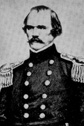

|

|

|
|
|
At the beginning of the Civil War, Albert Sidney Johnston
was perhaps the Confederacy's most renowned and
well-respected soldier. Johnston was born in Washington,
Kentucky on February 2, 1803 to John and Abigail Johnston.
Johnston was appointed to West Point from Louisiana and
graduated eighth in the class of 1826. He served at
Sackett's Harbor, New York in 1826, with the Sixth Infantry
at Jefferson Barracks, Missouri, in 1827, and as regimental
adjutant in the Black Hawk War. He married Henrietta
Preston in 1829, and resigned his commission in 1834 due to
her grave illness. After Henrietta's death in 1836, he went
to Texas and joined the revolutionary forces. He rose to
the forces' chief commander as senior brigadier the next
year. This appointment resulted in a duel with Felix
Huston, the man he replaced. Due to an injury suffered in
the duel, however, Johnston was unable to take his new post.
On December 22, 1838, he was appointed Secretary of War for
the Republic of Texas by President Mirabeau B. Lamar. In
1840, Johnston returned to Kentucky, where, on October 3,
1843, he married Eliza Griffin, a cousin of his first wife.
They returned to Texas to settle at China Grove Plantation
in Brazoria County.
During the Mexican War Johnston served as colonel of the
First Texas Rifle Volunteers and then served with W. O.
Butler as inspector general at Monterrey, Mexico. Johnston
reentered the regular army in 1849 and by 1855 had risen to
the rank of colonel. For his service in commanding an
expedition in Utah against the Mormons in 1857, he was
promoted to brigadier general in 1857.
When the Civil War began, Johnston returned to the army
as a Union brigadier general in command in California, but
when his "home state" of Texas seceded from the Union, he
resigned from the U.S. Army and joined the Confederacy.
Jefferson Davis placed him in command of the Western theater
as a full general. As commander of this department, his
area of responsibility was massive, extending from the
Appalachian Mountains in the East to the Indian Territory in
the West. When Fort Henry and Fort Donelson were lost in
February of 1862, Johnston was forced to retreat from
Kentucky and most of Tennessee. Johnston joined forces with
General P.G.T. Beauregard and massed in Corinth,
Mississippi, where he planned to launch a surprise attack on
the Union army in Tennessee.
Early on the morning of April 6, 1862, Johnston surprised
U.S. Grant's army at its camp on Pittsburg Landing on the
Tennessee River. The two day battle of Shiloh, named for a
small church near the landing, had begun. As hoped,
Johnston's attack caught the Federals completely by
surprise. Momentum was lost when raw recruits paused to
loot the overrun Union encampments, but by late morning
Johnston believed victory was his. "We are sweeping the
field," he told Beauregard, "and I think we shall press them
to the river." But the Federals held the Confederate forces
for a time at what became known as the "Hornet's Nest."
There was also hard fighting in a peach orchard where
Johnston himself led the final charge that drove the Union
defenders out of it. While directing operations at Shiloh,
Johnston was hit in the leg by a bullet which severed his
femoral artery. Johnston had sent his surgeon to tend to a
group of wounded Federal prisoners, and he bled to death for
lack of medical attention. He was temporarily buried in New
Orleans, but his remains were later transferred to Texas for
burial in the State Cemetery in Austin.
Source: Joan Waugh, ed., Facts on File Encyclopedia of American
History: Civil War and Reconstruction, 1856 to 1869 (New York: Facts on
File, 2003), 189.
|